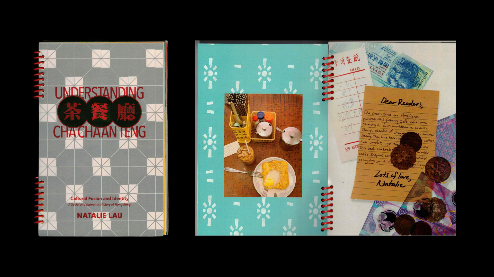
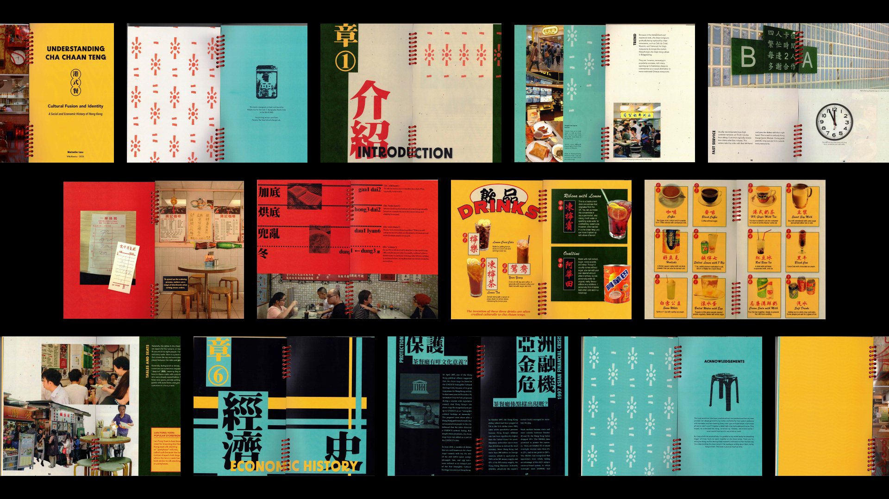
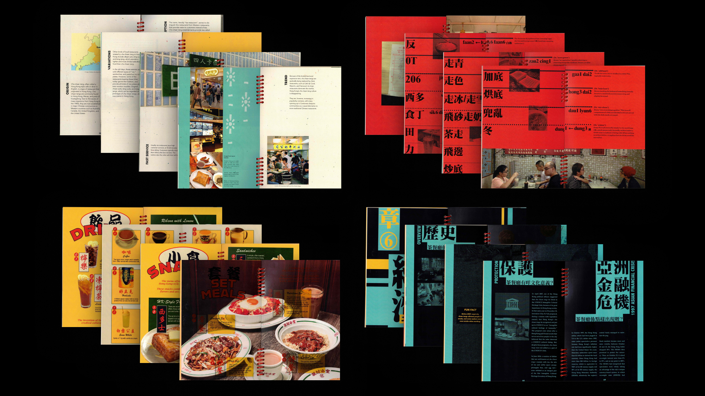

This 89-page spiral bound 5.5" × 8.5" book explores the stories behind Hong Kong’s most iconic comfort foods and the cha chaan tengs that shaped everyday life. Most of the text is adapted from the Wikipedia page titled “Cha chaan teng,” then edited and arranged to create a clear narrative. The visual design shifts throughout with playful spreads, menu inspired layouts, and straightforward informational pages that reflect the tone of each section. Warm imagery and thoughtful typography invite readers to experience the charm of Hong Kong’s café culture and leave with a deeper appreciation for its culinary identity.


